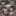
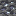
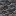
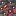
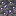
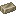
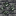
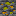
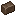

Minerais & Ressources
Publicité
Nouveaux minerais
Electrodynamics ajoute de nombreux nouveaux minerais au monde. Chacun existe en version normale (pierre) et en version deepslate. Utilisez un broyeur pour doubler votre rendement.
Tableau des minerais
| Minerai | Nom | Lingot | Utilisation principale |
|---|---|---|---|
 |
Aluminium | Câbles, machines légères, armure composite | |
 |
Plomb | Blindage radiation (Nuclear Science), batteries | |
| Argent | Câbles haute conductivité, composants électroniques | ||
| Uranium | Combustible nucléaire (Nuclear Science) — radioactif | ||
 |
Titane | Armure de combat, machines avancées | |
 |
Vanadium | Acier vanadium, tuyaux VS-Céramique (Nuclear Science) | |
| Chrome | Acier inoxydable, composants résistants à la chaleur | ||
 |
Lithium |  |
Batteries lithium, stockage d'énergie |
 |
Molybdène | Acier HSS, outils de forage | |
| Sel | — | Électrolyse, production de chlore et sodium | |
| Salpêtre | — | Engrais, explosifs | |
 |
Soufre | — | Acide sulfurique, chimie |
Doubler le rendement
Passez vos minerais dans un broyeur avant de les fondre pour obtenir 2 poudres par minerai, soit le double de lingots. C'est l'une des premières optimisations à mettre en place.
Matériaux composites
| Matériau | Composants | Utilisation |
|---|---|---|
| Acier | Fer fondu dans haut fourneau | Base de presque toutes les machines |
| Acier vanadium | Acier + Vanadium | Tuyaux haute température (MSR) |
| Acier inoxydable | Acier + Chrome | Machines résistantes à la corrosion |
| Acier HSS | Acier + Molybdène | Têtes de forage, outils de coupe |
 Carbure de titane | Titane + Carbone | Armure de combat avancée |
| Supraconducteur | Composants avancés | Câbles sans perte, machines de fin de partie |
Publicité